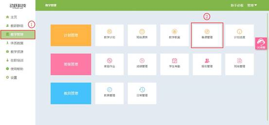

备课管理
视频教程：
选择需要授课的日期，进行备课，备课管理点击进入后，默认是编辑改日期下的下一周的备课信息。注：备课如果遇到假期（寒、暑假等），则不显示，需要点击日期跳到上课的时间才能选择。
1. 登录动跃体育教学管理平台后，进入平台操作界面。
2. 点击进入教学管理 > 点击班备课管理，如下图:

3. 页面上方可选择班级，可查看教师所带的所有班级，可查看所有班级综合课表，也可点选其中的班级，查看该选择班级的备课信息，左下角显示教学周，默认展示下一周的教学内容，点击下方向前向后按钮，可查看前一周或后一周的备课信息。

4. 点击黄色部分备课信息可查看备课内容的详细信息，点击教案按钮，课跳转到该教案对应的详细内容预览页面。
5.点击备课确定后，自动跳转到主页，可看到要负责班级要上课的内容。如果这周无课，则不显示，有课时，自动显示在主页上。
6.授课延期：教师因学校活动或其他一些原因，如临时不上课或请假等，导致该课程不能在预定好的时间完成，而后需要补上该节课的内容，可以选择该操作。
视频教程：
>在备课管理页面，选择需要进行延期授课的班级，以及需要延期的教学时间，和需要延期的课程。
>点击进入授课详细内容，弹出授课内容窗口，页面上方显示课程延后按钮，点击按钮弹出窗口显示课程延后，点击确定后，即可延后课程。
>返回备课管理页面，课查看到该堂课程延期成功。
7.课程调整：教师因学生上课的实际情况和课程搭配的合理性的考虑上，调整课程的上课顺序。
视频教程：
>在备课管理页面，选择需要进行课程调整的班级，以及需要调整的教学时间，和需要调整的课程。
>点击进入授课详细内容，弹出授课内容窗口，页面上方显示课程调整按钮。
>点击课程调整后，弹出窗口显示课程详细内容，点击需要的课程内容名称，即更换课程成功。